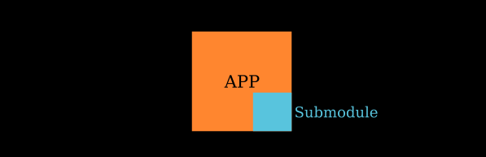
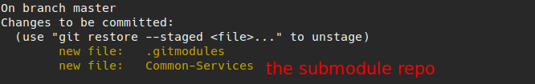

使用 submodule 遇到的一些坑
前言: 平时使用的一些常用的脚本以及常用组件如果在不同项目之间复制粘贴不易维护，所以把这些常使用的组件维护为一个仓库，其他项目在使用时把这个仓库添加为子模块(submodule)，这样的话，易用性和维护性都有了提升。
下面是我在使用过程中遇到的两个坑点。

第一个坑
我的错误做法: 在仓库里添加了子模块后，子模块的仓库会被 clone 到当前仓库中。使用git status会发现我们的子模块被添加到了 git 的缓冲区了，我之前不想让它加入缓冲区，就在仓库的 .gitignore 中添加了排除子模块的语句，之后 git push 就不能使用了。尝试重新生成 ssh key，但依旧没有起作用。
解决：之后在 .gitignore 中删除了之前添加了忽略子模块的语句后，git push 就可以重新使用了。
第二个坑
之前说过在 add submodule 后，子模块会被加到 git 的缓冲区中，类似下图中的黄色字体

因为当时我还有其他更改需要进行 commit ，就使用 git rm --cached 子模块，把子模块从缓冲区中删除掉了，这个命令执行之后，我的 git push 再次不能不能使用了(O x O)。
并且这个时候使用 git add 把子模块重新加载到缓冲区会有问题。
所以再次使用 git submodule add 子模块url 命令将子模块再次添加到仓库中，这个命令执行完毕后，我们可以再次看到子模块又出现在了 git 缓冲区中。因为这个就是需要提交到远程仓库的，commit 之后 push,可以在 github 仓库中看到这样的图标：
之后把常用的组件直接拷贝到子模块里，项目里想使用的话直接去进行拉取，并且子模块的分支使用也很灵活。
Reference
有问题请在 issue 中进行评论吧~